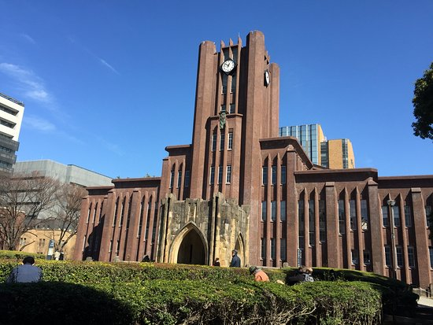

Halo, Saya Naulan Darmawan
Mewujudkan Impian Melalui Teknologi | SejutaCita Future Leaders Japan 2023
Mewujudkan Impian Melalui Teknologi | SejutaCita Future Leaders Japan 2023
Di Balik Matahari Terbit, Terukir Harapan: Suatu Hari Berangkat ke Jepang 🌅🛫. Bayangan Gunung Fuji Menyambut Petualangan, Sementara Aroma Ramen Menari di Udara. Jepang, Tanah yang Menyimpan Sejuta Cerita, Menjadi Kulminasi Impianku. Jalan-Jalan di Taman Sari Bunga Sakura, Meresapi Tradisi yang Tak Tergantikan. Bahasa yang Aku Pelajari Tidak Hanya Sekadar Kata-kata, Tetapi Jendela untuk Mengeksplorasi Kebudayaan yang Kaya. Suatu Hari, Pesawat Akan Menghantarkan Aku ke Negeri Matahari Terbit, dan di Sana Aku Akan Menulis Bab Baru dalam Perjalanan Hidupku. Dengan Setiap Langkah, Harapanku Semakin Nyata, Menuju Hari Ketika Aku Akan Menapaki Tanah Jepang yang Dulu Hanya Ada dalam Mimpi.
Tempat Impian Menemukan Kenyataan. Pintu Gerbang Menuju Pengetahuan yang Menakjubkan, Disertai Denyut Kehidupan Kota yang Tak Tergantikan. Menyusuri Lorong-Lorong Kampus, Bukan Hanya sebagai Pengunjung, Tetapi sebagai Bagian dari Warisan Ilmiah. Dalam Gedung-Gedung Megah, Aku Ingin Mengukir Jejak Prestasi dan Berbagi Ilmu dengan Pikiran Terbaik Dunia. Menapak di Tanah Universitas Tokyo adalah Menghormati Tradisi dan Membangun Masa Depan. Universitas Tokyo, Aku Siap Menulis Kisah Terhebatku Bersamamu!
Dalam perjalanan hebatku, aku, Naulan Darmawan, menjadi seorang remaja berusia 18 tahun yang telah membara dengan hasrat menggelora terhadap dunia teknologi, terutama dalam bidang pemrograman dan hacking. Semua dimulai saat aku masih duduk di bangku kelas 9 SMP pada usia 15 tahun. Pandemi Covid-19, yang datang pada tahap awal perjalanan ini, memberiku kesempatan emas untuk menyerap pengetahuan dengan lahap, sesuai dengan impianku. Situasi ini seolah membuka gerbang surga bagi rasa keingintahuan yang kian membesar, terutama terkait dengan bagaimana internet dan dunia siber beroperasi. Pemahaman tentang dunia teknologi semakin terbuka berkat peran inspiratif YouTuber Sandhika Galih yang telah membantu menjelaskan secara jelas bagaimana membuat situs web. Selain itu, Erico Darmawan Handoyo, melalui kanalnya, telah membimbingku untuk membangun aplikasi Android yang interaktif.
Dukungan dan panduan dari mereka menjadi pilar kokoh yang memacu semangatku untuk menggali minat dan bakatku lebih dalam lagi. Perjalanan ini kemudian membawaku ke SMK jurusan Rekayasa Perangkat Lunak (RPL) di SMKN 8 Malang. Di sana, aku bertemu dengan teman seangkatan dan para guru yang sama-sama memiliki semangat dan ketertarikan dalam bidang teknologi. Semangat dan dukungan dari teman seangkatan serta para guru telah mendorongku untuk berkompetisi dengan penuh semangat dan sportivitas. Hasilnya, aku meraih prestasi sebagai siswa berprestasi tingkat internasional di Malaysia, sebuah pencapaian yang dengan bangga aku peroleh. Dalam dunia pemrograman, aku menemukan panggilan sejatiku. Aku terus memperdalam pengetahuanku, menghadapi kerumitan kode-kode dengan tekad yang kokoh. Prestasi demi prestasi yang telah kusahkan hanyalah jejak dari perjalanan panjang ini. Setiap fase perjalanan ini telah membuka wawasanku yang lebih luas. Ini bukan hanya tentang teknologi semata, tapi juga tentang bagaimana aku tumbuh sebagai individu yang menghargai nilai-nilai seperti dedikasi, integritas, dan etika. Tulisan ini menjadi penanda perjalanan panjangku. Setiap kata yang terpatri di sini mencerminkan perasaan dan pemikiranku. Aku yakin bahwa perjuangan ini akan terus menjadi inti dari karierku, membimbingku menuju puncak yang tiada batas.
Di era yang semakin maju ini, pemanfaatan teknologi memiliki peran sentral dalam membentuk generasi muda Indonesia yang unggul. Contoh inspiratif datang dari perjalananku sendiri, Naulan Darmawan, yang telah mengeksplorasi potensi teknologi untuk memberikan dampak positif pada masyarakat. Namun, lebih dari sekadar aspek teknis, aku percaya bahwa teknologi adalah sarana untuk memberikan solusi nyata. Salah satu kontribusiku yang signifikan adalah pengembangan Virtual Tour menggunakan software Lapentor. Ini memungkinkan masyarakat menjelajahi tempat menarik tanpa harus berada di lokasi fisiknya. Aku juga telah mengajarkan ilmu penerapan Virtual Reality (VR) kepada SMKN 8 Malang, memungkinkan sekolah untuk menciptakan Virtual School Tour mereka sendiri. Inilah bentuk nyata penerapan teknologi yang memberikan dampak pada pendidikan dan budaya lokal. Namun, aku tidak berhenti di situ. Aku juga mengembangkan alat penyiram tanaman otomatis berbasis Arduino, C++, HTML, CSS, dan Flutter. Teknologi ini mencerminkan kemampuan teknisku dan kesadaran akan perlunya solusi berkelanjutan dalam mengatasi tantangan lingkungan. Dalam hal VR dan robotik, aku menyadari pentingnya mengintegrasikan teknologi ini dalam memajukan pendidikan dan industri di Indonesia. Inovasi di bidang ini membuka peluang bagi generasi muda untuk mengembangkan kreativitas dan pemahaman dalam konteks teknologi saat ini. Pada akhirnya, perjalananku adalah bukti bahwa teknologi, termasuk VR dan robotik, dapat membentuk generasi muda Indonesia yang unggul. Dengan tekad, kreativitas, dan semangat inovasi, kita memiliki kekuatan untuk memberikan dampak nyata pada masyarakat dan membentuk masa depan yang lebih baik.

Backend Terkeren

Mobile App Framework Andalanku

Desktop & Game Specialist

Super FE WEB Framework